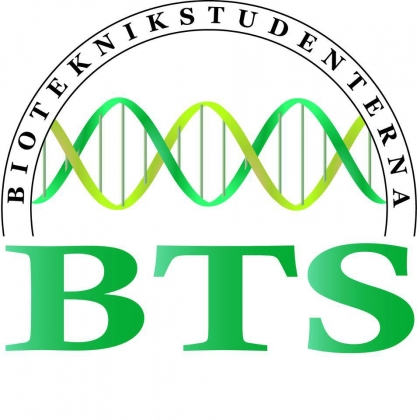

BTD har ett fullspäckat schema med aktiviteter som är allt från lärorika till ren underhållning. Det kommer att vara studentbesök, massa föreläsningar, en mässa där du kan prata med företag, kvällssittningar och mycket annat roligt. Kolla schemat för mer detaljer om vad som händer, och följ våra uppdateringar på facebook. Du kommer definitivt att lära dig massor, möta otroligt mycket folk och ha det riktigt kul!
Kolla på Bioteknikstudenternas blogg eller BTD:s facebookgrupp för senaste nytt om vad som kommer hända på årets bioteknikdagar: 
(Se mer under anmälan)